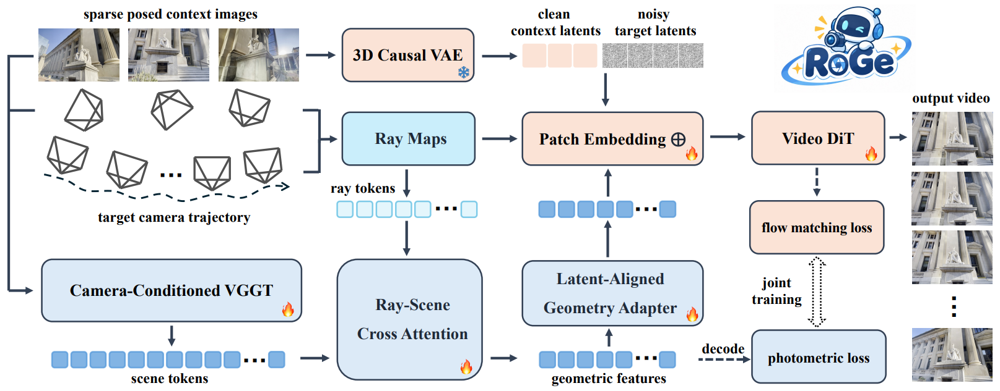
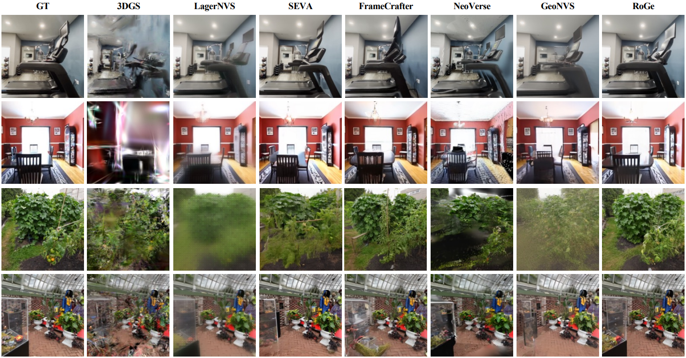
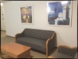
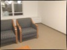
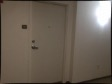
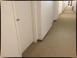
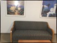
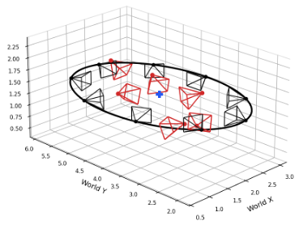
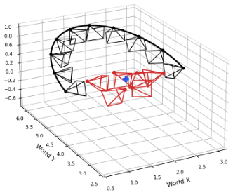
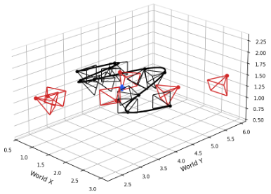

Novel view synthesis from sparse inputs requires both geometric grounding from the observed views and generative priors of unobserved regions, motivating recent hybrid methods that combine reconstruction and generation. However, existing methods bridge the two with rendered images or explicit 3D representations. Generation is thus conditioned on a lossy and imperfect projection of the scene, inheriting its errors, and reconstruction receives no signal from generation to correct them. We present RoGe, an end-to-end unified reconstruction and generation framework that removes this explicit bridge. It targets roaming within a scene anchored by sparse views: given a few posed images and a camera trajectory, it synthesizes a temporally coherent video along that trajectory. From the sparse input views, RoGe builds an implicit scene representation with a feed-forward reconstruction model, and queries it with camera rays to obtain per-view geometric features. These features are injected into a video diffusion model as conditioning, without any explicit 3D intermediate. Both modules are trained jointly, so the generation objective directly shapes its own geometric conditioning. We conduct extensive experiments, where RoGe outperforms reconstruction-based, generation-based, and hybrid baselines in terms of image-level quality and video-level temporal and geometric consistency. Ablations confirm that ray-queried implicit features outperform both raw reconstruction tokens and rendered RGB as conditioning, and that joint training brings further gains.

Overview of RoGe. Given sparse posed images and a target trajectory, the camera-conditioned VGGT builds an implicit scene representation. Camera rays query this representation to extract geometric cues, which are injected into the video diffusion model to synthesize a photorealistic novel trajectory video. The reconstruction and generation models are trained end-to-end.

| Method | Type | RE10K 3v | DL3DV 6v | ||||||
|---|---|---|---|---|---|---|---|---|---|
| PSNR↑ | SSIM↑ | LPIPS↓ | DreamSim↓ | PSNR↑ | SSIM↑ | LPIPS↓ | DreamSim↓ | ||
| 3DGS | R | 14.76 | 0.449 | 0.469 | 0.380 | 13.75 | 0.308 | 0.426 | 0.438 |
| AnySplat | R | 16.77 | 0.572 | 0.190 | 0.069 | 13.21 | 0.279 | 0.315 | 0.176 |
| YoNoSplat | R | 18.83 | 0.641 | 0.142 | 0.063 | 17.04 | 0.459 | 0.277 | 0.184 |
| LagerNVS | R | 32.09 | 0.955 | 0.031 | 0.036 | 20.90 | 0.639 | 0.193 | 0.122 |
| SEVA | G | 29.26 | 0.929 | 0.036 | 0.025 | 18.63 | 0.603 | 0.158 | 0.080 |
| FrameCrafter | G | 29.03 | 0.925 | 0.037 | 0.022 | 19.85 | 0.609 | 0.121 | 0.057 |
| Difix3D | R+G, 1 | 14.85 | 0.452 | 0.425 | 0.325 | 13.89 | 0.313 | 0.388 | 0.375 |
| 3DGS + Difix | R+G, 2 | 14.42 | 0.427 | 0.461 | 0.358 | 13.45 | 0.276 | 0.421 | 0.413 |
| LagerNVS + Difix | R+G, 2 | 30.98 | 0.895 | 0.027 | 0.034 | 19.74 | 0.574 | 0.181 | 0.119 |
| GEN3C | R+G, 2 | 23.55 | 0.816 | 0.096 | 0.043 | 12.78 | 0.256 | 0.434 | 0.269 |
| NeoVerse | R+G, 2 | 16.20 | 0.538 | 0.264 | 0.102 | 16.45 | 0.432 | 0.237 | 0.166 |
| GeoNVS | R+G, 2 | 27.89 | 0.913 | 0.049 | 0.047 | 18.78 | 0.619 | 0.155 | 0.077 |
| RoGe | R+G, 3 | 33.35 | 0.965 | 0.021 | 0.020 | 21.50 | 0.704 | 0.104 | 0.052 |
Image-level results on RE10K and DL3DV. R and G denote reconstruction-only and generation-only methods. R+G denotes reconstruction-generation-combined methods, where 1 and 2 are generation-aided reconstruction and decoupled reconstruction-then-generation. 3 couples the two modules end-to-end without any explicit 3D. Difix3D and Difix apply generative priors during 3DGS training and after rendering, respectively. Bold is best and underline is second best.
| Method | RE10K 3v | DL3DV 6v | ||||||||||
|---|---|---|---|---|---|---|---|---|---|---|---|---|
| FID↓ | FVD↓ | TSED↑ | MEt3R↓ | APE-T↓ | APE-R↓ | FID↓ | FVD↓ | TSED↑ | MEt3R↓ | APE-T↓ | APE-R↓ | |
| LagerNVS | 21 | 76 | 0.994 | 0.014 | 0.007 | 12.51 | 33 | 206 | 0.977 | 0.062 | 0.005 | 2.42 |
| SEVA | 15 | 78 | 0.987 | 0.019 | 0.018 | 20.99 | 23 | 85 | 0.972 | 0.076 | 0.011 | 5.38 |
| FrameCrafter | 14 | 83 | 0.969 | 0.018 | 0.030 | 28.37 | 16 | 89 | 0.720 | 0.080 | 0.018 | 6.18 |
| GEN3C | 31 | 154 | 0.997 | 0.020 | 0.027 | 23.68 | 61 | 281 | 0.854 | 0.089 | 0.057 | 35.24 |
| NeoVerse | 69 | 324 | 0.997 | 0.023 | 0.009 | 10.69 | 59 | 184 | 0.919 | 0.079 | 0.008 | 2.91 |
| GeoNVS | 24 | 92 | 0.986 | 0.021 | 0.018 | 23.63 | 29 | 136 | 0.928 | 0.083 | 0.021 | 11.63 |
| RoGe | 11 | 45 | 0.997 | 0.015 | 0.009 | 9.45 | 15 | 50 | 0.991 | 0.071 | 0.005 | 2.31 |
Video-level results on RE10K and DL3DV. FID and FVD measure visual realism and temporal coherence. TSED and MEt3R measure geometric consistency. APE-T and APE-R are translational and rotational absolute pose error. APE-T is normalized by trajectory length.
| Method | ACID 9v | |||||||||
|---|---|---|---|---|---|---|---|---|---|---|
| PSNR↑ | SSIM↑ | LPIPS↓ | DreamSim↓ | FID↓ | FVD↓ | TSED↑ | MEt3R↓ | APE-T↓ | RPE-R↓ | |
| LagerNVS | 24.11 | 0.708 | 0.139 | 0.088 | 29 | 133 | 0.994 | 0.028 | 0.032 | 0.21 |
| SEVA | 22.97 | 0.696 | 0.094 | 0.048 | 12 | 78 | 0.969 | 0.048 | 0.043 | 0.37 |
| FrameCrafter | 24.58 | 0.734 | 0.081 | 0.040 | 12 | 88 | 0.973 | 0.031 | 0.046 | 0.38 |
| GEN3C | 16.39 | 0.427 | 0.288 | 0.153 | 43 | 313 | 0.989 | 0.031 | 0.057 | 0.22 |
| NeoVerse | 15.99 | 0.401 | 0.322 | 0.209 | 89 | 399 | 0.995 | 0.032 | 0.036 | 0.27 |
| GeoNVS | 22.07 | 0.656 | 0.134 | 0.082 | 24 | 285 | 0.934 | 0.057 | 0.058 | 0.70 |
| RoGe | 26.30 | 0.786 | 0.064 | 0.032 | 10 | 36 | 0.995 | 0.027 | 0.028 | 0.20 |
Image-level and video-level results on ACID with 9 input views. Rotational error is reported as RPE, because the near-straight trajectories make rotational APE unreliable. Translational APE is length-normalized because ground truth here has no absolute scale.
Sparse context views (left) with target trajectories (top) and synthesized novel trajectory videos (bottom).
Sparse context views (left) with target trajectories (top) and synthesized novel trajectory videos (bottom).








@article{lang2026roge,
title={RoGe: Novel View Synthesis via End-to-End Implicit Reconstruction and Generation},
author={Lang, Xiaolei and Kang, Ze and Huang, Zehao and Wang, Naiyan},
journal={arXiv preprint arXiv:2609.02847},
year={2026}
}